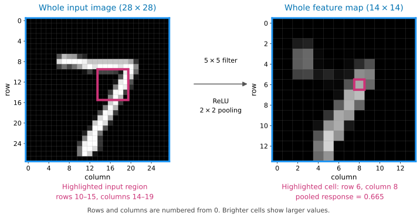
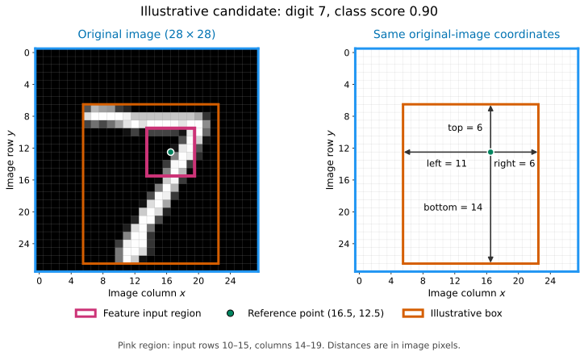
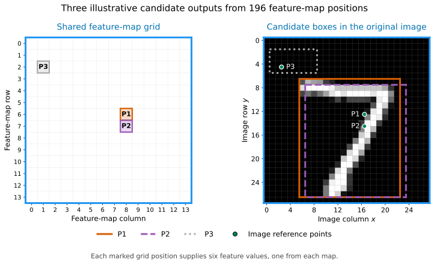
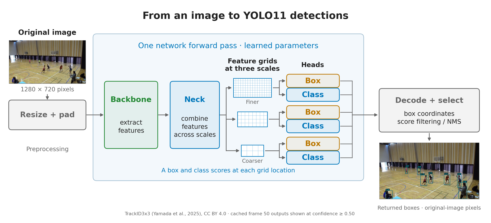
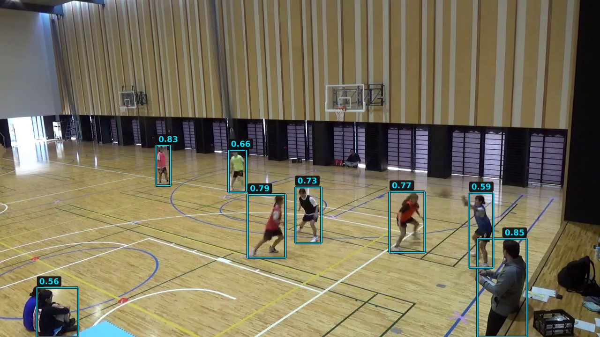

8 Object detection
8.1 Predicting classes and locations
For each detected object, we need a class and a location. In our basketball example, the class is person, while the location is represented by a bounding box:
\[ (x_{\min},\,y_{\min},\,x_{\max},\,y_{\max}). \]
These four numbers specify the box’s left, top, right and bottom boundaries in image coordinates.
We have already seen how a CNN can turn image features into class scores. To predict a bounding box, we also need a learned mapping from features to numerical coordinates. Predicting a category is a classification task; predicting these coordinates is a regression task.
For a simple model that predicts one object, we can use the same learned features for both tasks:
- A classification head maps the features to class scores.
- A box-regression head maps the features to four box coordinates.
Here a head means the part of the network that produces a particular output. The classification head plays the role of the final classification layers in our earlier CNN.
Training such a model requires class labels and bounding-box annotations. Its loss must account for both the class prediction and the predicted location. The forward-pass, loss, backpropagation and parameter-update procedure remains the same.
This describes one class-and-box prediction. We next need to consider how a detector produces multiple candidate predictions within the same image.
8.2 Feature maps and image locations
Our earlier CNN produced six \(14\times14\) feature maps. Each map is an array of numbers arranged in rows and columns. Each number holds a filter response after ReLU and pooling. We can view the array as an image, with larger values appearing brighter.

A pair of indices locates an entry in this array. In the figure, the entry at row 6, column 8 has value approximately 0.665. The pink outline on the left shows the input region used to calculate it: rows 10–15 and columns 14–19. The four overlapping \(5\times5\) filter positions feeding this pooling cell together cover this \(6\times6\) input region. Moving one cell to the right in the feature map shifts the associated input region two pixels to the right.
All six maps share this spatial grid. At row 6, column 8, we can read six responses, one from each map. These form a six-number feature vector that a prediction head can use.
In our earlier classifier, we flattened all six \(14\times14\) feature maps into one vector of 1176 values. We passed this vector to a classification head to predict the class of the whole image.
For detection, we can group the values differently. At row 6, column 8 of the feature maps, for example, we take one entry from each of the six maps. These six values describe different filter responses associated with the same input region of the original image: rows 10–15 and columns 14–19 of the original image, highlighted in the figure.
We can pass this six-value vector to classification and box-regression heads to produce a candidate detection. Repeating this operation at other rows and columns of the feature maps produces candidates based on different regions of the input image. Each candidate is therefore indexed by the feature-map position from which it was calculated.
8.3 Predicting one candidate box
Consider the candidate at row 6, column 8 of the feature maps. Its six feature values come from applying the six filters within the pink region of the original image, followed by ReLU and pooling. We choose the centre of this input region as a reference point for the candidate’s box. The orange box shows an example bounding-box prediction for the digit as a whole.
We use image coordinates measured in pixels, with \(x\) giving the column position and \(y\) the row position. Pixel centres have integer coordinates, starting at \((0,0)\) for the top-left pixel. Reference points and bounding-box edges can lie between pixel centres, so their coordinates can be fractional.
We find the centre of the pink input region by averaging its first and last column coordinates, 14 and 19, and its first and last row coordinates, 10 and 15. This gives, in pixels,
\[ x_0=\frac{14+19}{2}=16.5, \qquad y_0=\frac{10+15}{2}=12.5. \]
For this worked example, we use illustrative head outputs. Suppose the classification head gives digit 7 as the highest-scoring class, with a score of 0.90. The box-regression head predicts four distances, in image pixels, from the reference point to the box edges:
| Left | Top | Right | Bottom |
|---|---|---|---|
| 11 | 6 | 6 | 14 |

To obtain the box coordinates, we subtract the left and top distances from the reference coordinates and add the right and bottom distances. Image rows increase downwards, so the top edge has a smaller \(y\) coordinate than the reference point.
| Box edge | Calculation | Image coordinate |
|---|---|---|
| Left | \(x_{\min}=16.5-11\) | 5.5 |
| Top | \(y_{\min}=12.5-6\) | 6.5 |
| Right | \(x_{\max}=16.5+6\) | 22.5 |
| Bottom | \(y_{\max}=12.5+14\) | 26.5 |
The resulting candidate has class 7, score 0.90 and box coordinates
\[ (x_{\min},y_{\min},x_{\max},y_{\max})=(5.5,6.5,22.5,26.5). \]
Note that the reference point comes from the feature-map position, while the predicted distances determine where the box edges lie in the original image.
8.4 Multiple candidate predictions
At each feature-map position, we pass the six-value feature vector to the classification and box-regression heads, i.e. our learned models for predicting class scores and box-edge distances. We reuse each head’s parameters across the grid, meaning we use the same feature-vector-to-class-scores model and the same feature-vector-to-box-distances model at every feature-grid point. The head outputs vary only because the input feature vectors differ between points. With one candidate per position, the \(14\times14\) grid therefore produces 196 candidate outputs.
For this simple detector, we include a background class alongside the ten digit classes. This allows the classification head to give a high score to background at positions with no object to detect.
The following example shows three selected candidate outputs. Prediction P1 is the candidate from our previous example. The other boxes and all scores are illustrative values. We show the scores for digit 7 and background; the other nine digit-class scores are omitted from the table.
| Candidate | Feature-map row | Feature-map column | Score for digit 7 | Background score |
|---|---|---|---|---|
| P1 | 6 | 8 | 0.90 | 0.02 |
| P2 | 7 | 8 | 0.80 | 0.10 |
| P3 | 2 | 1 | 0.05 | 0.90 |

P1 and P2 both give high scores to digit 7, and their boxes overlap around the same digit. P3 gives a high score to background and a low score to digit 7. Each feature-grid position contributes one candidate box and its class scores. As P1 and P2 illustrate, different positions can produce candidates for the same object. We now need to choose which candidates from across the grid to return as object detections.
Note: Here we are selecting among predictions. When we compare overlapping candidates, we compare predicted boxes with other predicted boxes. Later, in Comparing sets of boxes, we will match the returned predicted boxes (which may still include some that are competing predictions in the same region) to annotation boxes to evaluate their agreement with the supplied annotations.
8.5 Filtering candidates by class score
We first choose the highest-scoring class for each candidate prediction. For our simple digit detector, we discard a candidate if that class is background. Otherwise, we keep it for the next stage only if its class score is at least a chosen score threshold.
For the three candidates shown earlier, a score threshold of 0.50 gives:
| Candidate | Highest-scoring class | Score for that class | Decision |
|---|---|---|---|
| P1 | Digit 7 | 0.90 | Keep |
| P2 | Digit 7 | 0.80 | Keep |
| P3 | Background | 0.90 | Discard: background |
Score filtering considers each candidate separately. P1 and P2 both pass this step, even though their boxes overlap around the same digit. We next need to consider the overlap between the remaining predicted boxes.
8.6 Non-maximum suppression
P1 and P2 both passed score filtering, but their boxes overlap around the same digit. A common procedure for reducing duplicate detections is non-maximum suppression (NMS). It keeps a high-scoring prediction and suppresses lower-scoring predictions of the same class that overlap strongly with it.
We measure box overlap using intersection over union (IoU):
\[ \operatorname{IoU} =\frac{\text{area covered by both boxes}}{\text{area covered by at least one box}}. \]
For boxes with positive area, IoU ranges from 0 for no overlap to 1 for identical boxes. The area calculation is explained in detail in Comparing two boxes.
For P1 and P2, the IoU is approximately 0.85. Suppose we use an overlap threshold of 0.70. We keep P1, which has the higher class score of 0.90. We suppress, i.e. discard, P2, whose class score is 0.80, because its IoU with P1 is greater than 0.70.
The class-score threshold of 0.50 decided whether each candidate entered this step. The overlap threshold of 0.70 decides whether another prediction is suppressed after we keep a box.
More generally, starting with the candidates that passed score filtering:
- Move the candidate with the highest class score into the list of detections to return.
- Suppress any remaining candidate of the same class whose IoU with that kept box is greater than the overlap threshold.
- Repeat with the remaining candidates until none remain.
Here, both boxes in each overlap comparison are predictions. Different real objects can also have strongly overlapping boxes, so NMS can suppress a valid detection. We will examine this limitation when we return to the basketball example.
8.7 From our simple detector to YOLO11
The simple detector we’ve described conceptually uses image features to predict both boxes and class scores across a grid. YOLO, short for You Only Look Once, uses this general approach. It is a single-stage detector: it predicts box and class outputs together from the image feature maps, without a separate region-proposal stage. A two-stage detector first proposes regions, then classifies and refines those regions.
The original YOLO detector was introduced by Joseph Redmon, Santosh Divvala, Ross Girshick and Ali Farhadi (Redmon et al. 2016). Since then, YOLO has become a family name rather than a single sequence of versions: related detectors have been developed by different research groups and organisations. Here we use Ultralytics’ YOLO11, released in 2024, and specifically the small YOLO11n model used in the lab.
The details differ among models, but the terms backbone, neck and head are commonly used for modern detectors. A backbone extracts image features, a neck combines information across spatial scales, and heads produce box and class outputs. The explanation below is based on Ultralytics’ YOLO architecture guide and the YOLO11 configuration in Ultralytics 8.4.52, the package version pinned in the lab. This material is just intended to illustrate the general ideas of a real-world object detection model; I don’t expect you to memorise all the details.

The feature extractor is called the backbone. In our small CNN, this was the convolution, ReLU and pooling block. YOLO11 uses a much deeper backbone.
Our earlier CNN used pooling to reduce each \(28\times28\) feature map to \(14\times14\). As information passes through YOLO11’s deeper backbone, further downsampling produces feature maps with progressively fewer rows and columns. Moving by one position on a finer grid corresponds to a smaller movement across the image. A position in a deeper, coarser grid draws on a larger region of the input image and provides broader context.
Rather than using only the final, coarsest output, the neck combines information from selected backbone outputs and produces separate fine, medium and coarse feature grids. This use of features at several spatial resolutions is commonly called a feature pyramid (Lin et al. 2017). YOLO11 supplies three such grids to its detection head; the number and exact resolutions used will depend on the specific detector. Finer grids retain more spatial detail, which is useful for small objects, while coarser grids provide broader context.
At each scale resulting from the neck, the heads produce box outputs and class scores. The box outputs are decoded into coordinates, and score filtering and NMS select the detections to return. The library accounts for the input resizing and padding when reporting box coordinates in the original image. These are the coordinates we use with our court mapping.
8.7.1 Building the heads in PyTorch
We can make the two-head structure explicit by briefly considering our single-grid digit example and earlier CNN feature extractor, rather than the full YOLO11 model. Here the CNN feature extractor plays the role of the backbone, and this simple example does not use a neck.
The backbone produces six output channels, each containing a \(14\times14\) grid of feature values. For one image, the output of the backbone has shape (1, 6, 14, 14), ordered as (batch, channels, height, width). These numbers come from:
- 1: one image in the batch.
- 6: the number of output channels we chose for the backbone convolution layer,
nn.Conv2d(1, 6, ...). Each of its six learned filters produces one output channel. - 14, 14: the height and width after pooling. The \(5\times5\) convolution, with padding 2 and stride 1, preserves the input’s \(28\times28\) dimensions. ReLU leaves the shape unchanged. The \(2\times2\) pooling with stride 2 then halves each dimension to 14.
Each head below consists of a \(1\times1\) convolution followed by an activation function. A convolution forms weighted sums over input channels and spatial positions. With a \(1\times1\) kernel there is only one spatial position in the window, so each output is a weighted sum of the six channels at that location, with a bias added. However, even with a \(1\times1\) kernel, the convolution structure ensures that the same weights and biases are used at every location. This operation mixes channels without mixing neighbouring grid locations.
Since there is no neck in this example, both heads take the backbone’s output directly as input. The heads change the number of channels while preserving the \(14\times14\) spatial grid:
| Head | Mapping at each grid location | Output shape for one image |
|---|---|---|
| Box head | Six features → four edge distances | (1, 4, 14, 14) |
| Classification head | Six features → eleven class scores | (1, 11, 14, 14) |
import torch
from torch import nn
backbone = nn.Sequential(
nn.Conv2d(1, 6, kernel_size=5, stride=1, padding=2),
nn.ReLU(),
nn.MaxPool2d(kernel_size=2, stride=2),
)
box_head = nn.Sequential(
nn.Conv2d(6, 4, kernel_size=1),
nn.ReLU(),
)
class_head = nn.Sequential(
nn.Conv2d(6, 11, kernel_size=1),
nn.Softmax(dim=1),
)The box head’s ReLU makes its four distances non-negative, in the order left, top, right, bottom. The class head’s softmax normalises the eleven scores separately at each grid location; channel 10 represents background.
To pass one random \(28\times28\) single-channel array through the backbone and both heads we would do:
images = torch.rand(1, 1, 28, 28)
with torch.no_grad():
features = backbone(images)
distances = box_head(features)
class_scores = class_head(features)
print("Features:", features.shape)
print("Box distances:", distances.shape)
print("Class scores:", class_scores.shape)Features: torch.Size([1, 6, 14, 14])
Box distances: torch.Size([1, 4, 14, 14])
Class scores: torch.Size([1, 11, 14, 14])There are \(14\times14=196\) candidate locations. At row 6, column 8, distances[0, :, 6, 8] contains the four distances, and class_scores[0, :, 6, 8] contains the eleven class scores. The first index selects the image in the batch.
In the snippet above, the input is random and the parameters are untrained. Hence, we only print the shapes of the outputs. Training would require annotated images and losses for the class and box predictions. The box loss can be based on IoU between predicted and matched reference boxes.
8.7.2 What changes in YOLO11?
Returning to YOLO11, our example illustrates the basic ideas, but the model used in the lab has a deeper backbone, a neck and three feature scales, as shown above. It also uses a more elaborate box-output representation that its decoder converts into coordinates.
Our digit example uses softmax over ten classes plus background. The pretrained YOLO11 detector instead produces scores for 80 object classes, applying a sigmoid to each class output. The choice of independent sigmoids, rather than a softmax across the outputs, means that each score again lies between 0 and 1, but the scores need not sum to one. Background candidates can have low scores for every object class, rather than a high score for an explicit background class. Several classes can also score highly for the same candidate. In the usual inference workflow, the highest-scoring class is selected and its score is the returned confidence.
Note: when we load yolo11n.pt, we load the complete pretrained detector, including its backbone, neck and heads. The basketball example uses these learned parameters.
8.8 Returning to the basketball example
We now return to the saved YOLO11n person detections for frame 50 of our basketball video and interpret the settings in our earlier detector call:
classes=[0]selected the model’spersoncategory.conf=0.01set the initial confidence threshold.iou=0.70set the NMS overlap threshold.
The CSV contains the library’s returned detections after this processing, rather than all raw candidate predictions, though with a permissive initial confidence threshold. This threshold gives 31 saved detections for frame 50. If we further filter by keeping those with confidence at least 0.50, we obtain the eight shown below.

For example, the box labelled 0.83 has the following values, with confidence and coordinates rounded to two decimal places:
| Class | Confidence | \(x_{\min}\) | \(y_{\min}\) | \(x_{\max}\) | \(y_{\max}\) |
|---|---|---|---|---|---|
person |
0.83 | 332.86 | 310.63 | 363.40 | 396.43 |
These coordinates are in pixels in the original \(1280\times720\) image.
The boxes labelled 0.85 and 0.59 at the right partly overlap, although they enclose different people. However, their IoU is approximately 0.07, well below the NMS threshold of 0.70. This particular overlap therefore does not trigger suppression between these two boxes.